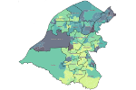

Trafford Data Lab
Applications
 Climate emergency slide pack
Climate emergency slide packMore than half of UK councils have declared a "climate emergency". This tool is designed to support local councils by visualising open data relating to climate change. We have also created an accompanying climate emergency open data companion.
 English Indices of Deprivation 2019
English Indices of Deprivation 2019Interactive visualisation of the data released by the Ministry of Housing, Communities & Local Government for Lower-layer Super Output Areas (LSOA) across England by Local Authority District. Please visit our Indices of Deprivation 2019 page for further resources.
 Ward Profiler
Ward ProfilerIn-depth information focussing on each of Trafford's wards. The information is presented in thematic sections as interactive maps and charts allowing for easy comparisons to be made. You can also download the data and code behind the visualisations.
 Explore
ExploreDiscover the different geographic areas of Trafford and visualise all of our spatial datasets in one application. Use the geolocation facility (on supported devices with the user's permission) to see where you are and discover what is around you.
 Crime Scanner
Crime ScannerInteractively visualise street level crime and anti-social behaviour (ASB) incidents in your area.
 Choroplether
ChoropletherCreate choropleth maps of your own data in Vega-Lite without having to write all the code yourself. Export the output as an image or embed it in a web page.
 Population Picker
Population PickerDiscover single or aggregated population figures for the different statistical and administrative geographies. Choose the age range of interest by single year of age and export the data in various formats.
 Postcode Loader
Postcode LoaderAn R Shiny app allowing users to download the latest postcode centroids from the Office for National Statistics' Open Geography Portal API.
Postcoder
This R Shiny application powered by Postcodes.io allows you to find administrative and statistical geographies for a given postcode. You can either enter the postcode manually or click on the map to find the nearest postcode to the corresponding coordinates.
This R Shiny application powered by Postcodes.io allows you to find administrative and statistical geographies for a given postcode. You can either enter the postcode manually or click on the map to find the nearest postcode to the corresponding coordinates.
 Plotter
PlotterCreate and edit map features in the form of lines, polygons, circles and markers and save the results. Load previously saved data and add to it, or use it in other applications such as Graphical Information Systems (GIS) software.
 Road casualties
Road casualtiesApplication enabling users to explore GM reported road traffic accidents involving personal injury between 2005 and 2018.
 Trafford corporate dashboard
Trafford corporate dashboardTrafford Council has identified 7 strategic priorities in its Corporate Plan that it believes are key to enabling Trafford's residents, businesses and staff to thrive. This dashboard allows you to browse a range of indicators that relate to each of the strategic priorities.
Graphics
Charticles
Bitesize articles with a chart or a map.
Bitesize articles with a chart or a map.
Index of Multiple Deprivation 2019 for Trafford
Visualising the data released by the Ministry of Housing, Communities & Local Government for Lower-layer Super Output Areas (LSOA) in Trafford. The previous version based on the Index of Multiple Deprivation 2015 is also available. Please visit our Indices of Deprivation 2019 page for further resources.
Visualising the data released by the Ministry of Housing, Communities & Local Government for Lower-layer Super Output Areas (LSOA) in Trafford. The previous version based on the Index of Multiple Deprivation 2015 is also available. Please visit our Indices of Deprivation 2019 page for further resources.
 Resident population of Trafford
Resident population of TraffordMid-year 2017 resident population estimates for Trafford visualised by electoral ward.
 Trafford locality and ward boundaries
Trafford locality and ward boundariesMap showing the boundaries of Trafford's localities and electoral wards.